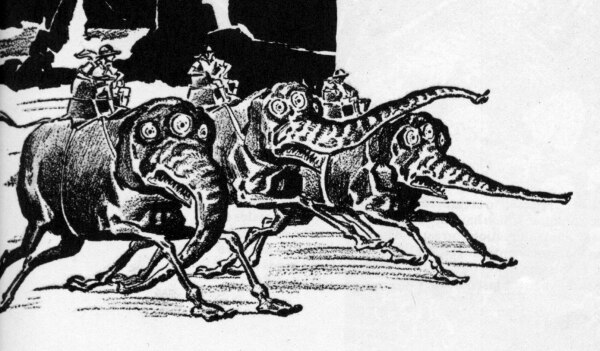

Wednesday, March the 3rd, 2004
back to: title, date or indexes

In response to the mention of fierce gigantic elephant-like beings in “Zoltan & Istvan” (see 1st March), that diligent correspondent Glyn Webster sent the above picture. It is by one H. W. Wesso*, drawn for Amazing Stories Quarterly, and Glyn says he likes to show it to people on the flimsiest of pretexts.
* NOTE :An anagram of “Who sews?”